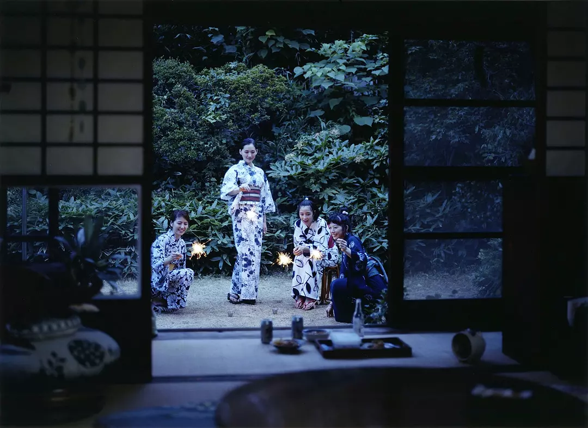

海街日记

剧情简介：
临海古都镰仓，顺山而成的小镇，不起眼的角落里生活着香田家四姐妹。她们的父亲早年和情人离家出走，母亲则干脆将女儿们抛给了外婆照顾。外婆去世后，外孙女们继承了这栋有着悠久历史的大房子。过早担负起家庭重任的大姐香田幸（绫濑遥 饰），尽心尽力照顾着两个妹妹佳乃（长泽雅美 饰）、千佳（夏帆 饰）健康成长。这一天，父亲去世的消息传到姐妹手中。她们结伴而行参加了父亲的葬礼，并且结识了从未谋面的异母妹妹浅野铃（广濑丝丝 饰）。许是血缘中的亲近之感，幸在临行前邀请铃搬来镰仓同住。未过多久，抱着对姐姐们的憧憬，铃迈入了父亲曾经生活过的房子。四季流转，姐妹们的故事悄然上演…… 本片根据吉田秋生的同名漫画改编。
影评：
海街日记-是枝裕和君的少女日记
就我个人而言，除了平和却坚定的三观，最喜欢是枝裕和的地方还在于他把剧作的巧合编织得和生活的狗血一样缜密自然，所有的梗埋藏时不露痕迹，揭盖时大方从容。比如我一直因为大姐幸的坚韧善良，忽略了她至少名义上和她父亲一样也是家庭的破坏者，幸一直宽慰小妹玲的“没有人有错”，或许是她从内心开解、宽慰自己的理由。有趣的是，顺着“没有人有错”这句话，伴着执拗母亲的登场、玲见或其中的温馨回忆，让电影中未露面的父亲从抛妻弃子的形象中逐渐洗白，让人得出结论：生活可真的不是非黑即白容易评判的事情。